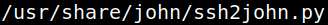
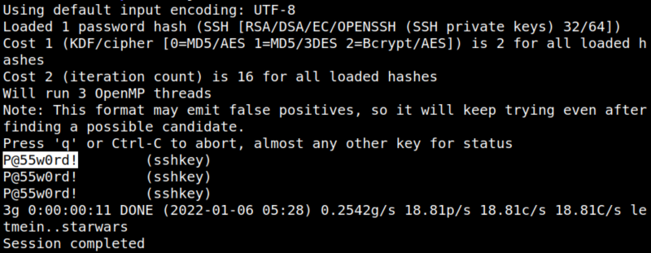

4.1 Get hash from SSH key
1. Use “ssh2john” to obtain the hash value of the ssh-key.
$locate ssh2john
Output:

2. Run the “ssh2john” with the “sshkey” file.
$/usr/share/john/ssh2john.py sshkey > hash
3. Download or copy the content of the “fasttrack.txt” file.
Crack the value with “John the Ripper”.
$john --wordlist=fasttrack.txt hash
Output:
